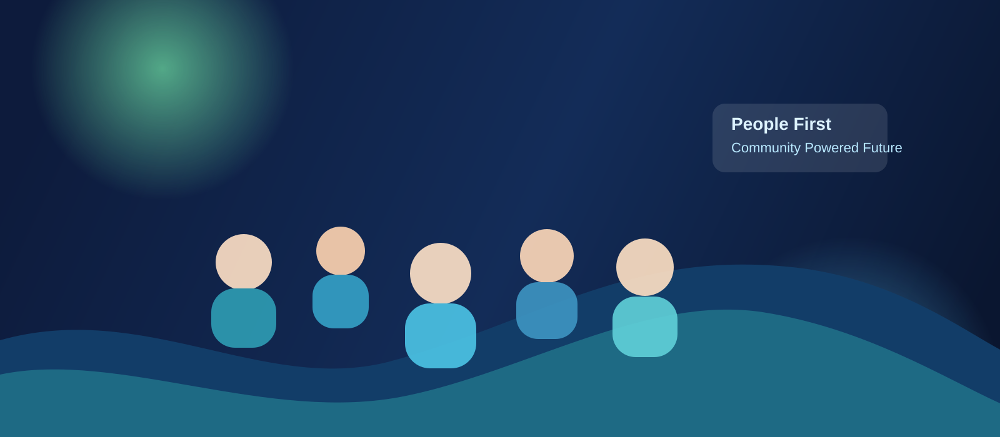
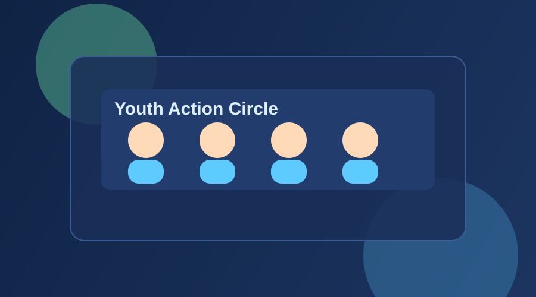
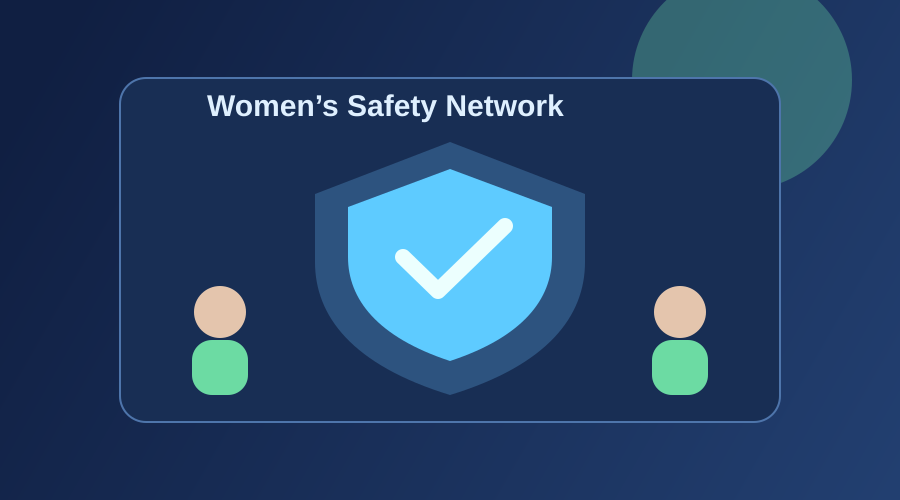

Youth Action Circles
Local groups that solve real civic issues, from exam fairness campaigns to anti-corruption awareness drives.
A modern people’s movement for an honest, safe, healthy and opportunity-driven India.

Citizens want a nation where merit is respected, justice is fast, women are safe, youth get fair exams, clean air and water are guaranteed, and leaders are accountable to public trust.
Local groups that solve real civic issues, from exam fairness campaigns to anti-corruption awareness drives.
Community legal support, fast-reporting help desks, and neighborhood watch partnerships.
Citizen-led tracking of local air and water quality with public dashboards and monthly action reports.
Open public meetings where residents submit and vote on local manifesto priorities.



End cash-based leakages through digital governance, social audits, whistleblower protection, and independent anti-corruption prosecution.
Use secure exam technology, audit trails, and lifetime bans plus jail terms for organized paper-leak networks.
Mandatory suspension during trial in sensitive roles, survivor protection units, and strict legal removal from authority after conviction.
City-level clean air targets, industrial accountability, groundwater protection, and safe drinking water in every household.
Strong anti-defection reforms so elected leaders cannot betray the voter mandate without going back to the people.